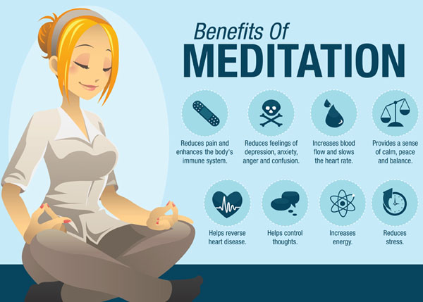

Concept of Process Over Product
The concept of process over product is relatively new and can be best described by a simple example below.
Young children love to create art, but they tend to focus much more on the process of creating and are not as interested
in the finished product. It's important for child care providers to realize that many young children may not want to
keep their artwork once it's finished or may not even be able to identify which piece they created.
This doesn't mean the activity was a failure; it simply means that the child focused on the process but did not
care about the final product. The focus in art activities should generally be on how the child is creating,
the feelings of the movements she's making with her arm, what the paint looks like on the paper,
how the colors combine, and other "process" activities.
Meditation is an ancient technique of being able to concentrate and focus on positive energy.
In our fast-paced modern lives, meditation is now recognized as a powerful life skill, bringing a renewed sense of clarity,
purpose, simplicity and calm.
Meditation reconnects us with our inner strength, unburdens the mind, and takes us to an inner space of stillness.

Homepage
Technical Blog
Technical Blog 2